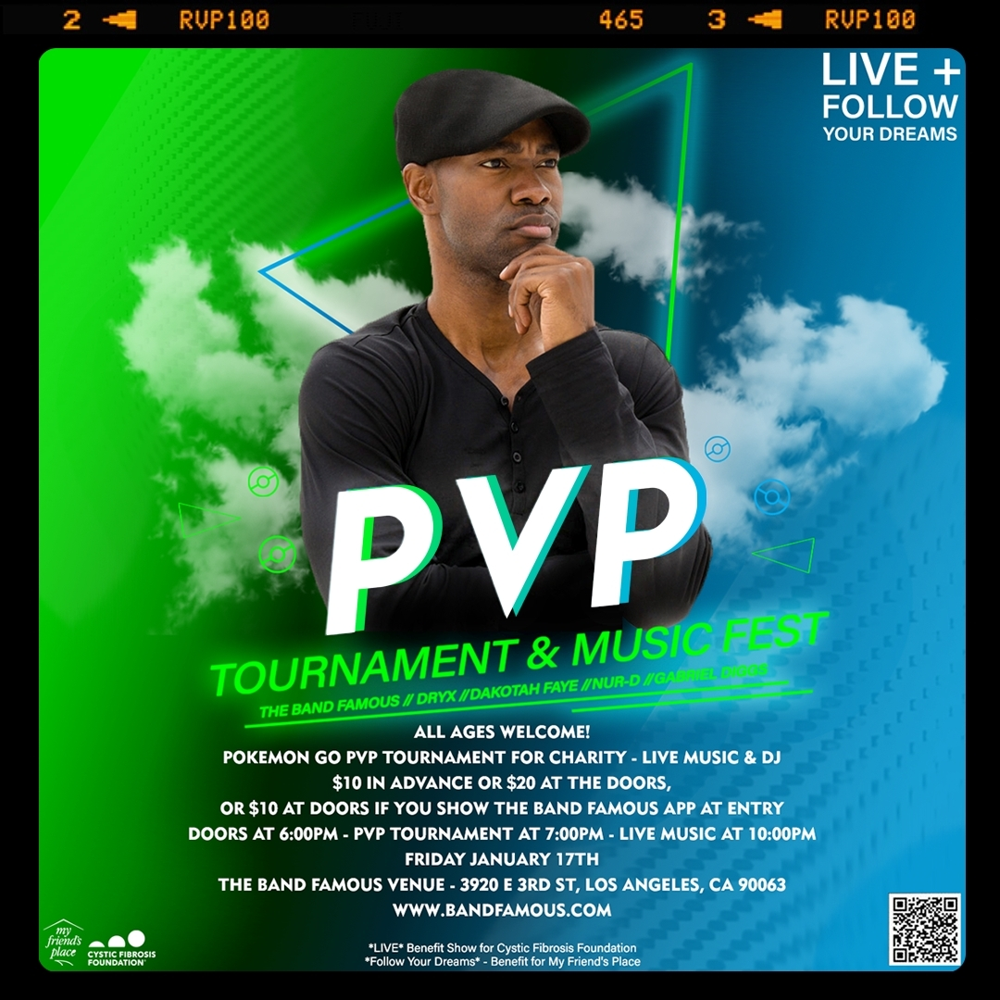

Take The Band Famous with you everywhere you go!


This page is dedicated to passionate eSports enthusiasts specifically as Pokémon Go as an eSport; albeit in its infancy stages. This page is an online eSports collective brought to you by The Band Famous® featuring creatives who are LGBTQA+ and BIPOC friendly and all-inclusive. We don't support gamers or people in real life who are racist, homophobic, sexist, or hateful in any way. We have chosen to sponsor these creatives in the Pokémon Go community. Stay tuned, as this page is sure to grow and blossom.
Along with being the founding, active members of the music group The Band Famous® aka TBF, Zander and Norell are also the developers behind this website you are on, both TBF apps, and the Hall Of Fame.

What are eSports? Think of it as a sort of competitive playing ground but in the virtual sense. Specifically, eSports are a form of competition using video games, namely multiplayer video game competitions, with some of the most common game genres including strategy, first-person shooter, and multiplayer online battle arena.
Why eSports?
We feel that eSports are relevant, but it goes deeper than that. It's an entire community. On a more personal level, TBF is responsible for all of our own music production and distribution, and we also manage and maintain all of The Band Famous® software. At times we find ourselves facing mental and/or creative roadblocks, be it troubleshooting updates to software, or trying to get a beat just right for a new song we're producing. If we don't walk away sometimes and trouble-shoot in increments, we risk getting too much inside our own heads, and further down the rabbit hole we'd fall.
Enter: eSports
We're an app-forward band sharing our musical and artistic pursuits via our own free software. As makers of free software, we also enjoy using other free software. We take pride knowing that some of our extracurricular activities include supporting free software and our fellow developer teams. We are regulars in the Rift, as well as frequently battling and holding gyms as well as participating in PvP in the world of Pokémon Go!
How We Participate in eSports
We will be live-streaming games, and uploading videos to our YouTube, and aspire to compete in more tournaments in the near future. We have won a past Clash tournament in League of Legends and we aim to do it again.
As there are already World Championships for eSports built around LoL and app-only games like Vainglory, we know anything is possible. There are already Pokémon World Championships built around all aspects of the Pokémon franchise (currently a pinnacle of competitive Pokémon play). While Pokémon Go is not yet fully accepted to be considered an eSport, we believe that with the gradual improvement of PvP experience to the game that is all about to change. Even League of Legends dealt with bugs and still does to this day, but we treasure Riot and all of the free software they have given us and the world at large. Pokémon Go has also given the world at large much for free with their intially free-to-download software game, even adapting for us during a global pandemic. True there are in-app purchases, but then again there are in most free games. We ourselves are working on adding in-app purchases to our own free apps in the future.
Thank you for visiting this page and getting to know some of our friends in the eSports world!
You are always welcome to come hang.
Level Up with Band Famous and Friends and join us in the action!

|

|

|

|

|

|
 |
It was Zander's idea to host, produce, perform and live-stream a two-day benefit music festival that would feature the world's first ever ranked PvP tournament for charity on 01.17.2020, and PkmnMasterHolly was our official MC for the weekend and was on fliers along with TrnrTips, and Mystic7 – all were featured guests!

Besides being lovers of art and music, Zander and Norell of The Band Famous are both gamers, enjoying games together like League of Legends, Left For Dead 2, and more; and on the mobile side of gaming, they have both been playing Pokémon GO since the first week the game launched, and are both level 40 players on Team Mystic.
We have been pretty active in the Pokemon GO scene and wish to help nurture the game's growth into an official eSport. The Band Famous sponsored PoGoKieng and hosted a PvP meet-up for him at our venue in East Los Angeles on Friday, December 13th, 2019.
I loved this event! Thank you for all that came out and battled!
— Kieng - TL40 (@PoGoKieng) December 14, 2019
Very appreciative of @TheBandFamous for letting us use their venue! pic.twitter.com/a3bBGRXaA9
We also attended the tournament at the Timeless Mega Tournament w/ Kieng & Nick in Montebello, CA on Sunday, December 15th, 2019. Zander documented as much of the exciting experience as he could and is working on a Pokémon GO documentary.
The Band Famous has hand-selected these members of the Pokémon Go community to affiliate with, proudly represent, and sponsor.
Check out this article TBF collaborated on with Pokémon Go Hub's writer & editor Avrip - The Potential of Pokémon GO PvP Becoming an Esport

TheSirMaximus
Official WebsiteTheSirMaximus was the winner of the Pokémon Go PvP ranked tournament for charity (the first one ever) on January 17th, 2020 as part of the two-day weekend that was the "Live + Follow Your Dreams" Benefit Music Festival hosted at The Band Famous venue, produced by The Band Famous and live-streamed via The Band Famous apps, twitch.tv/bandfamous and more that included stand-up comedy, body painting, live music acts from multiple states as well as local musicians, DJs, and more.
TheSirMaximus has always been a strong figure in the Pokémon Go community scene, and has majorly contributed to the PvP foundation and structure for the growing eSports side of Pokémon Go. When Zander had the idea to host a Pokémon Go ranked PvP tournament for charity and reached out to TheSirMaximus about it, he was happy to help. Together we helped raise awareness and proceeds for Cystic Fibrosis Foundation and My Friend's Place, with links to donate not only on the eventbrite, on our website, and in the live-streams, but also on silph.gg. The fact that TheSirMaximus won the competition, leading a four-way-tie - with ocelot577, RyloRen, and Sassifrass88 - with a total of 32 competitors just goes to show his strength in the Pokémon Go PvP scene. We look forward to what he has in store!
Anadactyl
Official Website
One of Anadactyl's friends organized a GoFundMe for Anadactyl, who was forced to leave a relationship due to domestic violence. Let's band together and help surpass this goal, which we are so close to doing! That's how amazing the Pokémon Go community can be, and that's why we're choosing to help sponsor and support some of the creatives we respect. Anadactyl happens to be one of them, as she speaks her mind and is authenitic, plus she advocates for LGBTQAI+ and BIPOC because - in her words - "she's not a piece of shit". Well said.
Please share the GoFundMe if you can, and give even a little if you are able to help Anadactyl make a fresh start away from abuse. Thank you! She has been an active member of the Pokémon Go community and has done her fair share of PvP tournaments and battles. Let's help her and her daughter make a fresh start so she can continue living her best life and being a vibrant, happy, and healthy member of our community. We love you Anadactyl! And we love the power of our Pokémon Go community banding together to help a friend in need. This is humanity demonstrated! We love to see it!
Stay tuned for the continuation of our "Party for a Purpose" benefit music events (and festivals when we are are able to or per social distancing guidelines).
We will continue the Pokémon Go PvP ranked tournaments for charity in collaboration with the Pokémon Go playerbase.
We will be live-streaming casually in the meanwhile; playing all kinds of games on twitch.tv/bandfamous, and occasionally hosting friends, sponsors, and those we are sponsoring.